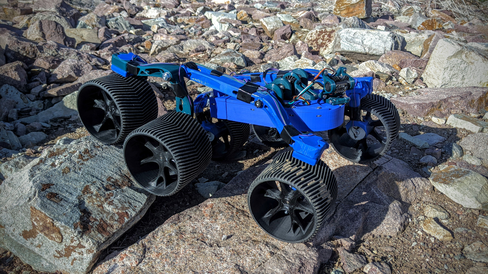

D.A.R.W.I.N.
Directional Awareness Rover With Intelligent Navigation. Arduino Based obstacle avoidance rover desigined for Colorado Space Grant's Robotics Challenge.
I am a student at University of Colorado Boulder pursuing a degree in mechanical engineering with a minor in electrical engineering. The road that has led me here began very early in middle school. I was very fortunate to attend a school with an early engineering program. Here, my fascination with technical systems was encouraged to grow, and I discovered my passion for tinkering and creating. I immersed myself in CAD modeling intricate parts and in working on my own robots! With a clear vision of my future, I pursued this passion in college, driven by an ambition to achieve more. Along this path, I've had the privilege of contributing to multiple robotic projects, sharing my knowledge through teaching, and gaining experience from none other than NASA! My excitement for the future propels me forward, and I am eager to share this enthusiasm with you.
Directional Awareness Rover With Intelligent Navigation. Arduino Based obstacle avoidance rover desigined for Colorado Space Grant's Robotics Challenge.
Summer research project at Colorado State University under Dr. Jianguo Zhao.

Part of the Robomaster North America Competition.

These are pictures and a render of a model I created to demonstrate my team's solution to eVTOL hubs. The proof of concept demonstrates the modularity, solar capabilities, and gear rack charging station that makes this idea effective in battery swapping eVTOLs quickly and efficiently.


Project for engineering projects course.

Class project
Personal Project

Project for a friend's VW Bug.


These 3 projects represent my introduction into robotics. I had the pleasure of working on multiple interesting projects that sparked my curiosity.

This project was an educational experience with Front Range Community College that took place over the course of an academic year. The goal of the project was to design an obstacle avoidance rover from the ground up with a team of 5 to compete at Great Sand Dunes and represent Front Range Community College among other schools in the state. We overcame many hurtles with this project. Our team of 5 developed into a team of 2 by the end of the first semester, but we carried on. After many long school nights, we successfully built a robot that was capable of completing all "Mars simulated courses" and even earned an award for its chassis structure. We later presented the rover at the COSGC Symposium, where we won the Top Robotics Poster Honors.
Our initial idea for steering DARWIN was to incorporate a zero degree turn system that essentially meant that the robot could make full rotations in place. As awesome as this idea seemed and as much as we wanted to incorporate it, upon implementation it introduced many issues and challenges. This video demonstrates one of our first tests of the system and a fatal flaw that me soon realized. As seen in the video the movement appears slow and weak. This is because the stepper motors we ordered did not have the required torque output to turn the wheels while the rover was on the ground. Unfortunately, we were not able to overcome this challenge with the time that we had and agreed to abandon the system.
This is another test of our steering system. Some improvements were made, but overall we could not stop the wheels from getting stuck. This was especially a key consideration when planning for harsher terrain such as sand or even rocks. It is also imporant to note in this video that we are purely testing the turning capabilities and not the obstacle avoidance feature as it was not integrated at the time of this testing.
This was our first successful test at the dunes. This was a simple course but demonstrates DARWIN's mobility as well as his calibration function. We found in our navigation testing that depending on the terrain DARWIN would experience vibrations that interfere with the Time of Flight(TOF) sensor motors. To fix this we implemented a calibration function that would occur every 10 seconds where the TOF sensor would look for the front two wheels and use that to recenter itself.
Course #2 at the dunes and here Adam explains DARWIN's calibration function.
Course #3 was our first good demonstration of DARWINS suspension system and why we chose to incorporate a rocker-bogie style suspension. Also mentioned here is our drift function. This was a crucial feature that allows us to navigate towards the finish line. In previous years teams had to incorporate a beacon system to navigate to the end of the course, but after many issues they decided to discontinue the practice. To solve this issue for our robot specifically, we implemented a dead reckoning system that would essentially have a "golden direction" that it would record when it is first turned on and drift functions that would give it a bias towards the golden direction when driving straight and not avoiding obstacles.
Course 4. Although our rocker-bogie suspension and 6-wheel drive helped us to maintain traction and overcome many obstacles, this was where we realized that our generic style wheels were less than ideal for the terrain. We would either get stuck from an awkward angle or encounter traction issues. Half of the tires were wrapped in electrical tape and after a few tries we were able to navigate to the end.
It is hard to tell in the video but course 5 was a steep incline on sand. We had many issues with sliding but DARWIN percervered.

This was one of the greatest achievements I have made in my engineering career. With numerous challenges and hours spent on the project it was sureal seeing it all come together in the end. I am so proud of my partner and I in what we have achieved.
Also in this picture is our carrying handle that we made to easily transport DARWIN. We didn't have any great spots to pick up or hold the robot so this was a great solution.

This was our poster presentation setup at the engineering symposium at CU Boulder.
Also pictured here is our before and after models of our shape optimized parts. Using this technology in fusion we were able to make organic looking parts that used up to 60% less material while maintaining structural strength.

Our final poster for the symposium where we won best robotics poster.

This was a summer research project at Colorado State University. I lived here and worked full-time developing a gripper for drone perching. More specifically, I worked with a previously designed passive bistable gripper to study and improve upon with the implementation of spring steels. The goal was to attach this gripper to a drone in the field, allowing it to perch onto tree branches, effectively meaning the drone can continue to collect data while preserving battery life at elevated positions. I worked alongside graduate students, gained insight into research papers, and presented my findings to professors and other graduate students at the facility, when the project ended.

Pictured here are a few of the gripper iterations that I made along with the original gripper in white. Torsion spring were used in a few of the designs to enable their retraction.

Before triggered.

After triggered.
Also pictured here is the specialized high friction tape used to enhance grip strength.

This was the testing rig that I used in order to test the grippers' grip strength. I made a series of different diameter mounts to insert into the device that I could test the grip strength in relation to diameter.

This was my final poster that I presented at the end of the summer along with all of the grippers. Pictured here is a retractable spring steel gripper that I was working on that unfortunetly I never got to finish.
Recently, I joined the CU robotics team, where I play a vital role in manufacturing parts for this year's new fleet of competition-level robots. Every year 5 new robots are designed and made from the ground up which include 3 different robots for the 3v3, 1 robot for the 1v1, and 1 experimental robot, this year a 2 wheeled balancing robot. We will continue to work on the robots for a full academic year, after which we will compete in the North America RoboMaster Competition in the summer of 2024. This year hosted at CU! Further details can be found here.


These are pitch nut plates that will allow the turret to aim up and down. One of them is cut through and the other is not because we realized that the extra material was not needed.


This is a top bearing block that will allow the turret to spin. This piece will be mounted to the chassis on the corners and a large bearing will fit into the center of the block around the grooves.


These are odom shafts that will be used in the wheels assemblies of the robots to track rotations.

This is a pitch encoder shoulder bolt. These are special made bolts with a magnet insert that will help the turret to pitch up and down.
This was intended to be a POV rendering of our VTOL facility. The build featured 18 hangars(9 on the other side) that could quickly service the vehicles and store them overnight.

This is an example of 3 of the hangars open and a VTOL flying in. Also pictured here is our solar panel with the intent to power most of the facilities needs.

Another view of the facility. It is also important to note that our design has a lot of empty space towards the top of the structure. Our idea is to use that space for advertisments which is demonstrated with the NCAS banner.

This is a close up view of one of the hangars. The idea is 1 technician can be allocated per 2 bays. The wall seperation allows for way acces to both sides. A technician can unload the dead battery from the eVTOL with the electric jack, bring it over to the lift system and deposit it, and grab a freshly charged battery to load back into the eVTOL.

Another photo depicting the electric jack with a battery.

This is a close up view of our battery lift. The lift is designed to house many batteries and can transport them to various levels. The battery holder is made to have grooves so the electric jack can easily drop the batteries on the platform. The battery platforms would be wireless charging and although this is slower than conventional charging, it requires far less effort, is faster for workers, and our system negates the issue to wait for a charged battery.

My fascination with computers and curiosity about water-cooling led me to build my current custom-loop water-cooled gaming computer that I use for school, 3D modeling, gaming, and everything in between. It is equipped with an RTX 3080 GPU and an Intel i7-10700K CPU and even black lights and UV reacting coolant.


These 2 photos were from the building stage. Figuring out the tubing was an interesting challenge. Here I had put in 4 tubes which I had bent myself after attempting the process a few times.

This was my solution for adding a second radiator. The case was not designed to have a radiotor here like this, but I made it work and it came out perfectly.

This was my first attempt at the build while I figured out how exactly everything was going to come together. You can see that I changed the graphics card orientation and I changed where the fans were going to mount.

It is in fact green.
One of the first startups demonstrating the startup time.

The result of my projects course where my team of 4 worked on this idea for an automatic rear sunshade in a car. This project utilized CAD moedeling, 3D printing, mylar film, strong suction cups, and Arduino robotics to create our final prototype. Mylar was chosen for its reflective properties and its ease of use. The project won second place at the design expo hosted at Front Range Community College - Boulder County Campus!

This picture depicts the system in the rolled up position. 4 suction cups are placed on the surface. 2 strings hang off the side to guide the screen down. the idea is that these strings would be mounted at an angle to accomadate a rear window's sloped angle.
Here the sunshade is demonstrated rolling up. The device uses a DC motor to reel the shade up until a current spike is detected, meaning the shade is all the way up. Unfortunately, the shade got stuck in this video trying to unroll, but some minor modifications could remove this issue.
This was a test before the expo to ensure our device was working. This is a good demonstration of the simple gear mechanism as well as the single click button to control the shade. In a real application this button would be near the driver of the vehicle so they can simply click the button to communicate with the rear sunshade.

This a project I worked on for a class to represent what being a transfer student means to me. On top of this, it demonstrated my curiosity and infatuation with lights paired with my devotion to my beliefs. This was completely custom-built from the frame to the engraved glass. It is capable of generating a multitude of animated light patterns and even reacts to sound!

The engraved image is a cross in front of a range of mountains conveying the idea that Jesus meets you at the bottom of the mountain.
The glass was engraved on a laser cutter and is sandwiched between a mirror on the backside and a 1 way mirror in front creating the infinity effect.
This video demonstrates some of the colors and animations it is capable of, but there are many many more. Overall it is simple to control. There is a reciever box mounted to the side of the frame that plugs into a wall outlet and an IR remote that changes colors and settings.

This Spider-Man mask is a personal project demonstrating my take on an electronically controllable wearable Spider-Man mask with expressive eyes. It is capable of different expressions and soon will be a great addition to a cosplay.

This picture shows the eyes closed, but it can also open and close one at a time.

This is my initial testing for the electronics to ensure everything worked before I started soldering and implementing it into the mask.

This is the electronics integrated into the mask and held on temporarily with zip-ties. The system is powered by a rechargeable 9 volt battery and controlled by an Arduino Pico. 2 pancake stepper motors would control the eye movement and take input from 3 touch sensors.

This is the front of the mask at this stage. The eyes were 3D printed and are removable, but further sanding and painting was needed to achieve a more finished look.

This is one of the eyes after considerable sanding and paint work to get a smooth finish. The initial print was very rough and so this process took quite a while.

These are the final eyes painted in black and finished in some gloss clear coat.
Quick video to show how the eye shutters would move and also testing for interference.
This video shows how the system reacts to different inputs. The code accounts for every possible combination of inputs to achieve the desired expression.

My first attempt at hydrodipping a large item like a front splitter in carbon fiber to be used on the underside of a Volkswagen Beetle. This project required extensive prep work to smooth out the previously textured surface.

The splitter is made up of 3 parts. Here I have the 3 parts sanded and primed ready to be dipped.

The primed surface is a drastic improvement from the original piece although not perfect.

The carbon fiber film comes on a roll and needs to be cut to size. an adequete amount of extra material around the part is needed to ensure a successful dip. Painters tape was added to the sides to ensure the film would float and that water would not find its way to the top of the film.

These are the parts immedietly after they were dipped. The finish came out pretty good and most importantly in the areas that will actually be seen.


These are a series of photos after the splitter had been clear coated. The final paint job had a nice shine and a clean look.
This video shows the overall quality of the paint. The side pieces are excellent and have minor imperfections. The center piece I would have liked to come out a bit better but it was a challenging part to do.

Unfortunately, the finished splitter underwent some critical damage and needed to be repaired. All broken parts were reattached and meticulously reworked to a factory look with extensive bondo and sanding work along with all imperfections and impact damage. The part was then redipped in a carbon fiber film to achieve the desired look.

these are all of the broken pieces of the splitter sanded and primed to get a paintable surface again.

The splitter was broken in several places. It was hit hard by a large water puddle and managed to break the ends and a small piece that attached the middle to the right side.


The parts required extensive amounts of labor to restore, but I managed to get them back together using 2 brackets and some screws that I would cut with a dremel and sand down flat. Damaged parts were also reinforced and reattached with epoxy. Once I got the splitter back together it still had numerous damaged areas from impacts that I went over with Bondo and sand paper to ultimately achieve this factory look again.

One more layer of adhesion promoting primer was applied to hopefully ensure the final product was long lasting.


At the end of the project I was able to restore the splitter and I managed to achieve an even better finish this time. To further reinforce the product, garage floor clear coat was used on the splitter to protect the paint from UV and any impacts.

This was my first computer build and intro into the complex world of computers. It was equipped with a GTX 1080 Ti GPU and an Intel i7-7700k CPU.


During my Highschool aerospace class we were tasked with building a rover that could transport a payload. All of the robots were VEX based meaning the electronic components, chassis, drive components were all VEX. Our rover featured a belt driven wheel system, and a lift to pick up objects with different heights.


The rover was capable of picking up objects using 2 rubber band arms that would conform to the shape of the object to hold it. The rover was remote controlled and overall performed for what we needed it to do.
This was a very complicated VEX device with the simple goal of playing a guitar. this project required many hours of building, coding, and troubleshooting. Many systems needed to work together and we even had 2 VEX Cortexes that would communicate to each other.
This was our first test of our flywheel system for our ping pong ball shooter bot. We were able to achieve a very high rpm with the motors provided.
This is a test of our conveyer system that would eventually feed the flywheel ping pong balls.